Mobile Data Recovery
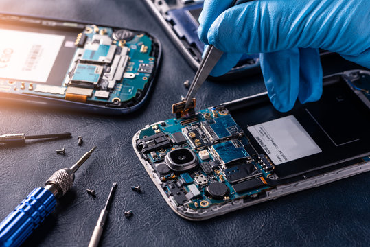
Losing important data due to accidental deletion, formatting, or hardware failure can be distressing. Mobile data recovery services specialize in retrieving lost files, such as photos, videos, contacts, and documents, using advanced recovery tools and techniques. Experts handle both software-based issues and physical damage to storage components. They ensure the safe extraction of recoverable data while maintaining privacy and security. This service is invaluable for recovering critical information and minimizing data loss in the event of device malfunction or user error.
Mobile Mic Repair
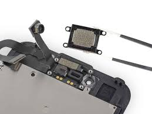
A malfunctioning microphone can disrupt phone calls, voice recording, and virtual assistant commands. Mobile mic repair services involve identifying issues caused by physical damage, software glitches, or debris. Technicians carefully clean or replace the microphone component to restore clear audio input. With specialized tools, they ensure the mic functions optimally, enabling uninterrupted communication and recording. The repair process often includes testing the phones audio system to ensure all related components work seamlessly.
Mobile Overheating Solution
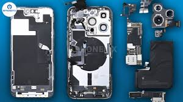
Overheating in mobile phones can result from prolonged usage, hardware issues, or software bugs, potentially leading to performance degradation or hardware damage. Mobile overheating solution services diagnose the underlying cause, whether its a faulty battery, inefficient heat dissipation, or resource-heavy apps. Technicians clean internal components, replace damaged parts, or optimize software to reduce heat generation. Preventive measures, like installing cooling mechanisms and updating settings, may also be implemented, ensuring safe and efficient operation of the device.
Mobile Network Issue
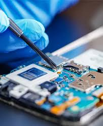
Network issues, such as weak signals, frequent call drops, or inability to connect to cellular networks, can be caused by software bugs, damaged antennas, or SIM-related problems. Mobile network issue repair services involve thorough diagnostics to identify whether the issue lies in hardware, software, or network settings. Technicians may replace faulty antennas, update the software, or reconfigure settings to resolve connectivity problems. The service ensures that your phone reliably connects to the network for calls, texts, and data usage.
Mobile Memory Card Slot Repair
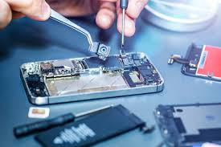
Memory card slots allow for external storage expansion, and a malfunctioning slot can result in the phone failing to detect the card or accessing its data. Mobile memory card slot repair services involve identifying issues such as debris, bent pins, or hardware damage. Technicians clean the slot or repair/replace damaged components, ensuring compatibility with memory cards. The service ensures proper detection and functionality, allowing users to store and access their files seamlessly.
Mobile Camera Repair
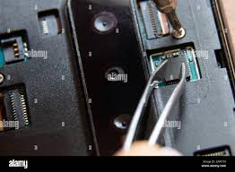
Smartphones rely on high-quality cameras for capturing photos and videos. Damage to the camera lens, sensor, or internal circuitry can result in blurry images, non-functional cameras, or software errors. Camera repair services include diagnosing and addressing these issues, ranging from cleaning the lens to replacing the camera module. Expert technicians ensure that your smartphones camera returns to its original performance, providing crisp, clear images and videos. This service is critical for preserving the multimedia functionality of your device.
Mobile Power Button Not Working
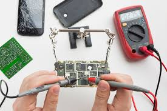
A faulty power button can make it difficult to turn the phone on or off or activate certain functions. Mobile power button repair services address physical damage, debris accumulation, or internal component failure. Technicians carefully disassemble the phone to clean, repair, or replace the power button mechanism. This ensures smooth and reliable functionality, restoring your ability to control the phones power and perform essential actions without difficulty.
Mobile Power Button Not Working

A faulty power button can make it difficult to turn the phone on or off or activate certain functions. Mobile power button repair services address physical damage, debris accumulation, or internal component failure. Technicians carefully disassemble the phone to clean, repair, or replace the power button mechanism. This ensures smooth and reliable functionality, restoring your ability to control the phones power and perform essential actions without difficulty.
Mobile SIM Card Slot Repair

The SIM card slot is essential for cellular connectivity, and damage to this component can result in issues like SIM detection errors, poor network connectivity, or inability to make calls. Mobile SIM card slot repair services involve diagnosing and repairing hardware issues, such as bent pins, debris, or physical damage. Professionals may clean or replace the slot to restore full functionality. This service ensures that your phone connects reliably to cellular networks, enabling communication and data usage without interruptions.
Mobile Water Damage Repair
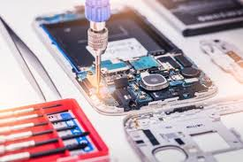
Accidental exposure to water or other liquids can severely impact a mobile phones functionality, causing issues like short circuits, corrosion, or component failure. Mobile water or liquid damage repair services focus on carefully disassembling the device, cleaning the internal components, and identifying damaged parts. Advanced techniques like ultrasonic cleaning may be employed to remove residue and moisture. Damaged parts, such as screens, batteries, or circuit boards, are replaced to restore full functionality, preventing long-term damage to your device.
Mobile Screen Repair or Replacement
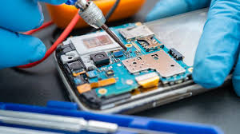
Mobile screens are the most vulnerable component of smartphones and are prone to cracks, scratches, or complete damage due to accidental drops or impact. The repair and replacement of a mobile screen involve diagnosing the extent of the damage, ensuring the functionality of the touchscreen, and replacing the screen if necessary. High-quality replacement screens ensure the restoration of display clarity, touch sensitivity, and durability. Professionals use advanced tools and techniques to carefully disassemble and replace the damaged screen, ensuring your mobile functions like new.
Mobile Battery Repair or Replacement
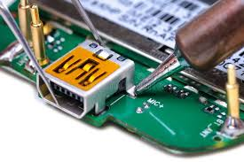
Over time, smartphone batteries can degrade, resulting in reduced capacity, shorter battery life, or unexpected shutdowns. Battery repair and replacement services address these issues by diagnosing the root cause of battery performance degradation. If repair is not feasible, certified technicians replace the battery with an original or high-quality compatible one, restoring optimal performance. Proper battery management tips may also be provided to prolong battery life and maintain your phones functionality.
Mobile Charging Port Repair
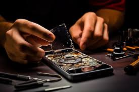
Charging ports are crucial for powering up your phone and transferring data. Frequent plugging and unplugging, debris, or wear and tear can damage the port, leading to connectivity issues or slow charging. Charging port repair involves cleaning, diagnosing, or replacing the damaged port. Skilled technicians carefully disassemble the device to replace or repair the port, ensuring compatibility with your charger. This service restores reliable charging and data transfer functionality, making your phone operational again.
Mobile Back Glass Repair
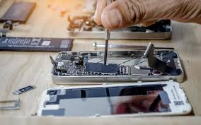
The back glass of modern smartphones is both aesthetic and functional, often housing wireless charging components. Cracks or damage to the back glass can compromise the phones structure and usability. Mobile back glass repair services involve precise techniques to remove the damaged glass and replace it with a high-quality replacement. Advanced tools ensure minimal risk to internal components during the repair process. This service not only restores the phones appearance but also ensures it remains sealed against dust and moisture.
Mobile Virus Removal

Smartphones are vulnerable to viruses, malware, and spyware that can compromise personal data, slow down the device, or disrupt normal functions. Mobile virus and malware removal services involve identifying malicious software through advanced diagnostic tools and safely removing it. Technicians may install antivirus solutions and update the operating system to enhance security. Additionally, users are provided with tips on safe browsing and app usage to prevent future infections. This service ensures your phone runs smoothly while protecting your sensitive information.
Mobile Speaker Repair

Mobile speakers play a vital role in delivering clear audio for calls, notifications, media, and more. When speakers malfunction, it can result in distorted sound, low volume, or no sound at all. Mobile speaker repair services involve diagnosing issues caused by dust, physical damage, or internal hardware failure. Technicians may clean the speaker or replace the damaged component with a compatible one. This ensures high-quality audio output, restoring the devices functionality for calls, music, videos, and alarm
Mobile Auto Switch Off

Phones that turn off automatically without warning can indicate hardware or software malfunctions, such as overheating, battery faults, or system errors. Mobile auto switch-off repair services aim to identify the root cause through comprehensive diagnostics. Technicians may address battery-related issues, clean internal components, or repair faulty circuits. Additionally, they may resolve software glitches through updates or reinstallation. This service ensures that your phone operates reliably without unexpected interruptions.